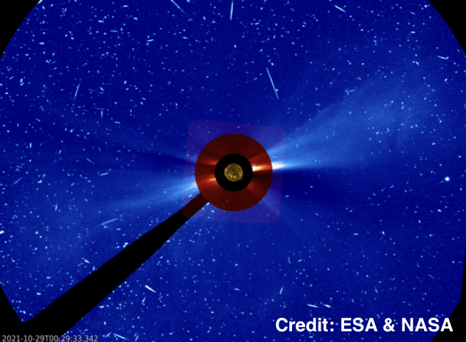
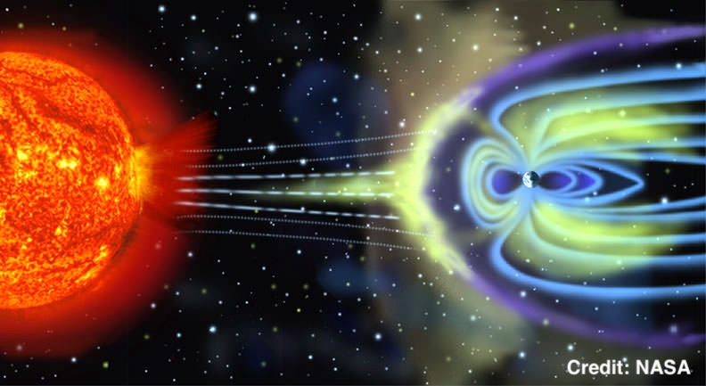
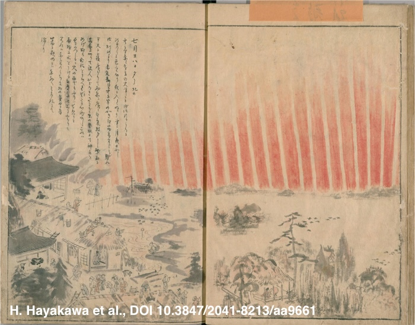
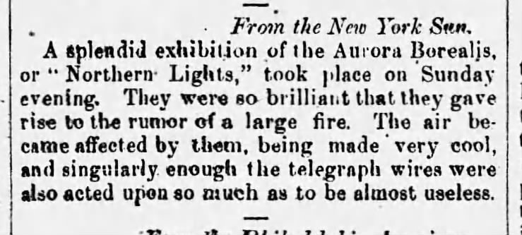
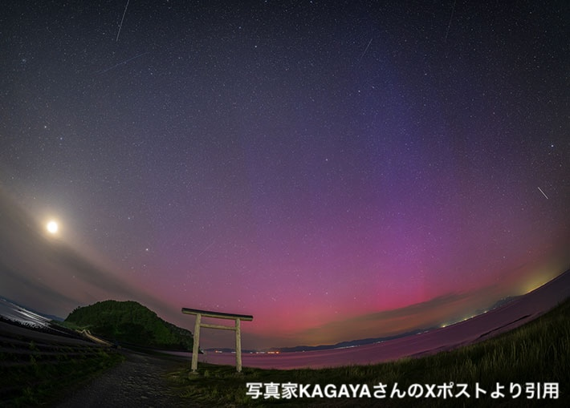
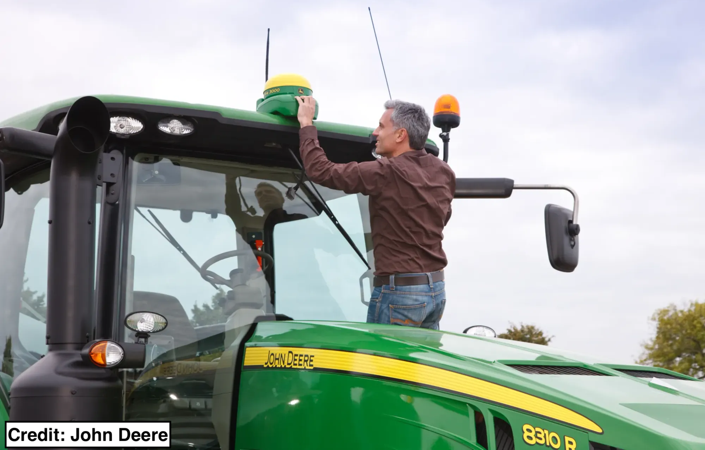
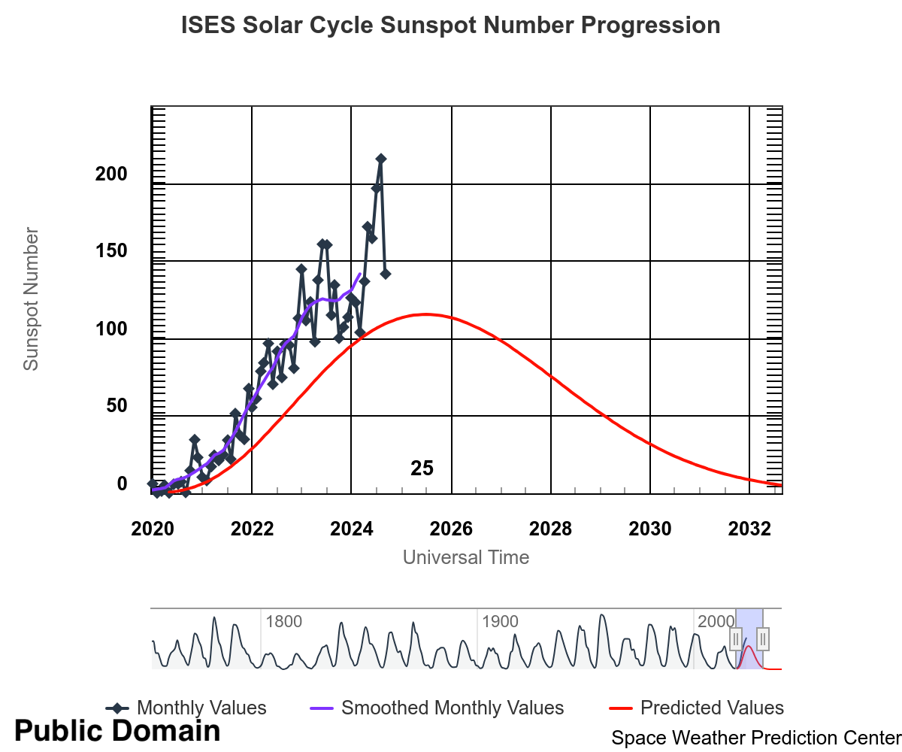
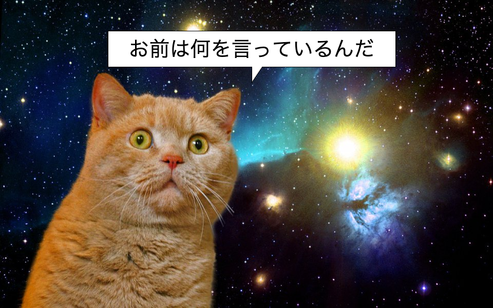
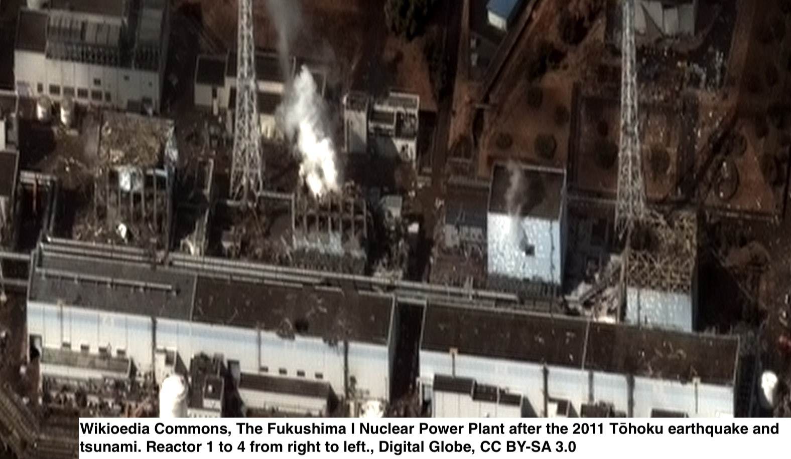
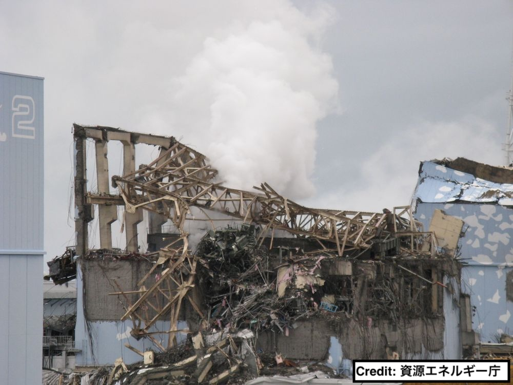

<!-- Title --> ### 宇宙の天気がITインフラに与える影響とその対策 #### 〜太陽が地球のコンピュータを破壊する？〜  --- ### 自己紹介 <div class="profile-container"> <div class="profile-left" data-markdown> * さめ(meg-ssk) * 🧑💻 フリーランスのソフトウェアエンジニア * 得意分野: * 📸 コンピュータビジョン (画像認識/点群処理) * 🌍 空間情報処理 (地理情報/リモートセンシング) * ☁️ クラウドインフラ設計/IaC (AWS, GCP) * [GitHub](https://github.com/s-sasaki-earthsea-wizard) * [YouTube](https://www.youtube.com/@SyotaSasaki-EW) * [Speaker Deck](https://speakerdeck.com/syotasasaki593876) </div> <div class="profile-right"> </div> </div> --- ### 今日のテーマ <div class="highlight-box" data-markdown> * **キャリントンイベント級の大規模太陽嵐の再来を、各国政府や巨大IT企業、宇宙機関は現実的なリスクとしてマジで警戒している** * 今年(2025年)は太陽活動が最も活発になる年！ </div>  --- ### 今日話すこと <div class="simple-box" data-markdown> * キャリントンイベントとは何か？ * キャリントンイベントのような大規模な太陽嵐が起きた場合、どのような影響があるのか？ * 過去の大規模太陽嵐の事例を紹介 * 太陽活動がなぜITインフラと関係するのか？ * ITエンジニアはどのような対策を取るべきか？ </div> --- ### キャリントンイベントとは？ <div class="simple-box" data-markdown> * 1859年9月2日に起きた観測史上最大規模の太陽嵐 * 天文学者のリチャード・キャリントンが前日の9月1日に世界で初めて太陽フレアを観測 </div> <div class="container"> <div class="col-left"> <img src="assets/images/Carrington_Richard_sunspots_1859.jpg" alt="carrington_event" height="300px"> * キャリントンは太陽黒点付近で強烈な閃光を観測 </div> <div class="col-right"> <img src="assets/images/CME_of_23_July_2012.jpg" alt="carrington_event" height="300px"> * 2012年7月の太陽嵐の画像 </div> </div> --- ### キャリントンイベントの影響 <div class="simple-box" data-markdown> * 世界各地でオーロラが観測された (日本でも!) * 当時普及しつつあった電信に大規模障害発生 </div> <div class="container"> <div class="col-left">  </div> <div class="col-right">  当時の新聞: <br> _オーロラが輝き電信が使えなくなった..._ </div> </div> --- ### Googleの対策 <div class="simple-box" data-markdown> * Google Cloud「我々の海底ケーブルは太陽嵐から守護られている」 * キャリントンイベント級でも耐えられる設計に * 想定される起電力: +800 V * 対策済みサージ電圧: +6000 V </div> <img src="assets/images/google-solar-rtorm-surge.png" alt="google_cable" height="300px"> --- ### 宇宙天気と太陽嵐 <div class="simple-box" data-markdown> * 太陽は電気を帯びた巨大なガスの塊 * 太陽フレアやCMEなどの激しい現象 → 宇宙天気 * これらが特に激しい時 → **太陽嵐!** </div> <img src="assets/images/NOAA_space_weather.png" alt="NOAA_space_weather.png" height="400px"> --- ### ファラデーの法則 <div class="simple-box" data-markdown> * 磁場の変化によって起電力が生じる * コイルのそばで磁石を動かすと豆電球が光る * 太陽嵐の影響で地球の磁場が乱れると... * **地球上の電気機器に異常電圧が発生する!** </div> <img src="assets/images/Faraday-law-of-induction.png" alt="faraday" height="300px"> --- ### 太陽嵐への警戒 <div class="simple-box" data-markdown> * 各国の政府機関も太陽嵐に警戒 * 英国 Royal Academy of Engineering のレポートを紹介 </div> <div class="container"> <div class="col-left"> <div class="col-image-container"> <img src="assets/images/UA-RAE-report.png" alt="RAE_report" height="380px"> </div> </div> <div class="col-right"> * Extreme space weather: impacts on engineered systems and infrastructure * 2013年に公開された報告書 * 太陽嵐の影響を詳細に分析 <div class="col-image-container"> <img src="assets/images/RAE-report-QR.png" alt="RAE_report_QR" height="150px"> </div> </div> </div> --- ### 太陽嵐のふたつの脅威: @地上 <div class="simple-box" data-markdown> 1. 地上インフラへの影響 * 送電網での異常な電圧発生 * 変圧器の故障 * 大規模停電の危険 * 通信ネットワークの障害 * 海底ケーブルへの影響 * インターネット接続の不安定化 </div> --- ### 太陽嵐のふたつの脅威: @宇宙 <div class="simple-box" data-markdown> 2. 宇宙インフラへの影響 * 人工衛星の機能障害 * 通信衛星、気象衛星、GNSS衛星... * GNSS（GPS）の精度低下 * カーナビ、船舶、航空機、ドローンに影響 * スターリンクの事例(2022年): 一度に40基喪失! </div> --- ### 歴史的な大規模太陽嵐 <div class="simple-box" data-markdown> * 1859年: キャリントンイベント * 1989年: カナダのケベック州大停電 * 2012年: ニアミス！大規模太陽嵐の直撃を回避 * 2024年: 現代の高度情報社会に対する警鐘 </div> --- ### 1989年のケベック州大停電 <div class="simple-box" data-markdown> * **太陽嵐がカナダのケベック州全州で9時間の停電を引き起こした** * 600万人が影響を受けた大規模停電 * 変圧器の連鎖故障で完全な復旧まで数週間 * 世界中の電力会社が対策を強化 </div> <img src="assets/images/Quebec_breakout.png" alt="quebec_blackout" height="300px"> --- ### ニアミスだった2012年の太陽嵐 <div class="simple-box" data-markdown> * **2012年7月に発生した大規模太陽嵐** * キャリントンイベント級の大規模太陽嵐 * 発生が9日間遅れてたら地球を直撃していた * もし直撃していたら... </div> <img src="assets/images/CME_of_23_July_2012.jpg" alt="solar_storm" height="350px"> --- ### 2024年5月の大規模太陽嵐 <div class="simple-box" data-markdown> * **2024年5月に発生した大規模太陽嵐** * 日本でも各地でオーロラが観測 * 大規模な停電や通信障害は発生せず * 世界中の電力会社や通信事業者の対策の成果 </div>  --- ### 農業のデジタル化の落とし穴 <div class="simple-box" data-markdown> * GNSS精度低下で自動運転トラクターが使用不能 * トウモロコシの作付けの直前だった... </div>  --- ### 2025年は太陽活動のピーク! <div class="simple-box" data-markdown> * 2025年は太陽活動周期(約11年周期)の最盛期！ * NASAは大規模な太陽嵐が発生する可能性を示唆 * 当時とは比べ物にならない被害が出るかもしれない... </div>  --- ### どれくらいの現実味があるのか？ <div class="simple-box" data-markdown> * 今後10年間の間にキャリントンイベント級の大規模太陽嵐が発生する確率は？ </div> <br> <div class="highlight-box" data-markdown> <h1>12%</h1> * [P. Riley, DOI 10.1029/2011SW000734](https://agupubs.onlinelibrary.wiley.com/doi/full/10.1029/2011sw000734) </div> --- ### NASAのインタビューへのRileyさんのコメント <div class="simple-box" data-markdown> * 「当初は、これほど高い確率に驚きましたが、統計は正しいようです」 * 「気が重くなるような数字です」 * [Near Miss: The Solar Superstorm of July 2012](https://science.nasa.gov/science-research/planetary-science/23jul_superstorm/) </div> <br> <div class="highlight-box" data-markdown> * あなたは"12%"の確率をどう受け止めますか？ * ファイアーエムブレムなら絶対に怖い確率... </div> --- ## ITエンジニアは2025年に何をすべきか？ --- ## 結論: 普段通りにする ---  <div class="highlight-box" data-markdown> * これまで散々不安を煽っておいてなんだその投げやりな態度は？ * ちょっと待ってください、話を聞いてください！ </div> --- ### ITインフラの鉄則: 冗長化 <div class="simple-box" data-markdown> * 大規模災害への復旧対策 (DR; Disaster Recovery) は普段からの取り組み * データの分散保管 * クラウド x オンプレミス * マルチAZ、マルチリージョン、マルチクラウド... * 通信経路の複線化 * バックアッププランの用意 </div> <br> <div class="highlight-box" data-markdown> * **「いつも通り」が最強の対策!** * ...もちろん予算と時間の許す範囲で </div> --- ### 個人でもできる現実的な対策 <div class="simple-box" data-markdown> * 基本的な備えこそ最も大事 * アース付きサージプロテクタ * 機器を異常電圧から守る * UPS導入 * 少しでも時間を稼げれば価値あり * 正常なシャットダウンが可能 * サーバーラックという「物理の砦」 </div> <br> <div class="highlight-box" data-markdown> * **これらは通常の災害復旧対策としても有効！** * 地震、台風、盗難... </div> --- ### まとめ <div class="highlight-box" data-markdown> * 私たちは宇宙天気と隣り合わせで働いている - 2025年は太陽活動のピーク! - キャリントンイベント級の可能性も？ * 巨人たちの対応 * 各国政府や宇宙機関、Googleなどの巨大IT企業も本気で対策 * ...でも、私たちは？ - 意外な結論：**普段通りが最強** - 基本的な対策を地道に積み重ねる </div> --- ### 歴史的な教訓 <div class="simple-box" data-markdown> * 普段からやるべきことをやっておかないと、いざという時にとんでもないしっぺ返しを食らう * 日本人は2011年の東日本大震災で学んだはず * **歴史から教訓を学ぶ** </div> <div class="container"> <div class="col-left">  </div> <div class="col-right">  </div> </div> --- ### 参考文献 * キャリントンイベントをはじめとした過去の大規模太陽嵐の事例 * [【ゆっくり解説】人類強制インターネットデトックス！キャリントン・イベントについて語るぜ！](https://www.youtube.com/watch?v=iIeURg3SyDg&pp=ygUe44Kt44Oj44Oq44Oz44OI44Oz44Kk44OZ44Oz44OI) * [Eyewitness reports of the great auroral storm of 1859](https://www.sciencedirect.com/science/article/abs/pii/S0273117706000160) * [The Great Québec Blackout](https://spaceweatherarchive.com/2021/03/12/the-great-quebec-blackout/) * [Solar Storm Knocks Out Farmers' Tractor GPS Systems During Peak Planting Season](https://www.404media.co/solar-storm-knocks-out-tractor-gps-systems-during-peak-planting-season/) --- ### 参考文献 * 大規模太陽嵐への対策 * [Extreme space weather: impacts on engineered systems and infrastructure](https://raeng.org.uk/media/lz2fs5ql/space_weather_full_report_final.pdf) * [Does the internet need sunscreen? No, submarine cables are protected from solar storms](https://cloud.google.com/blog/products/infrastructure/are-internet-subsea-cables-susceptible-to-solar-storms?hl=en) * [On the probability of occurrence of extreme space weather events](https://agupubs.onlinelibrary.wiley.com/doi/full/10.1029/2011sw000734) * [Near Miss: The Solar Superstorm of July 2012](https://science.nasa.gov/science-research/planetary-science/23jul_superstorm/) * [Space weather effects on technology](https://www.spaceweather.gc.ca/tech/index-en.php) --- ### Acknowledgements <div class="simple-box" data-markdown> * 本スライドのドラフトのレビューをしてくださった[ソーサツ・チエカさん](https://vrchat.com/home/user/usr_da45e624-75e1-42d6-8448-8bacf63c07d1)に深く感謝を申し上げます </div>